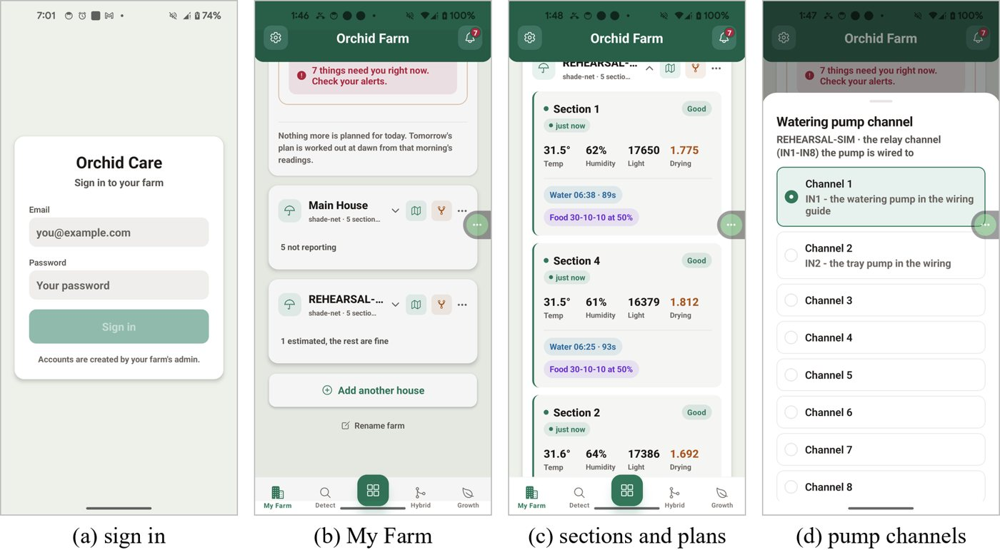
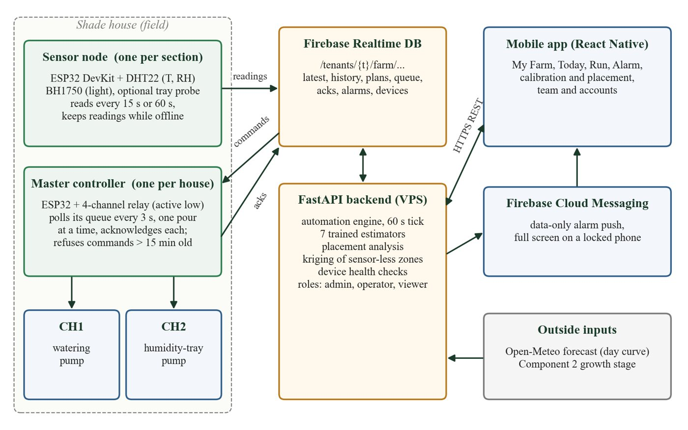
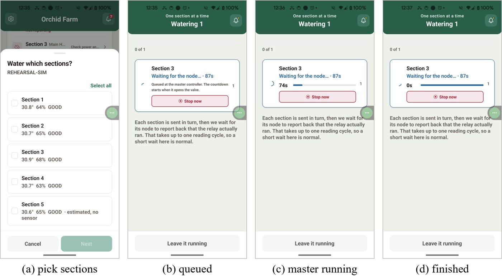
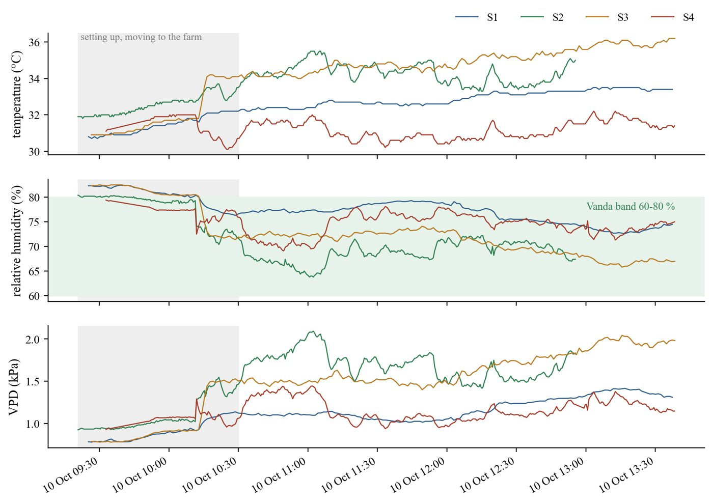

Literature Survey
What existing research tells usOrchid growing in Sri Lanka
Commercial orchid growing in Sri Lanka suits the warm and humid lowlands. A regional study by the Food and Agriculture Organization describes the climate of the Western Province as favourable for Dendrobium, Vanda and Phalaenopsis, and reports that almost all orchid cultivation took place under shade netting, with most growers using mist irrigation[1].
How Vanda orchids take up water
Vanda orchids are epiphytes. Their roots hang in the air and are covered by a spongy layer called the velamen, which absorbs water within seconds and loses it slowly by evaporation[2]. Growers are advised to water generously, often daily and in the morning[3]. Because there is no potting medium, there is nothing to put a moisture probe in, so the real daily question is when to water and for how long.
Smart farming systems for orchids
Several systems have tried to automate orchid care. Some water when soil moisture drops below a threshold, others predict humidity in an orchid room or combine machine learning and IoT sensors to give the grower advice. The table below summarises the systems most relevant to this project.
| Study / System | What it does | Limitation for Vanda shade houses |
|---|---|---|
| Maleesha and Silva (2024)[4] | Automated water distribution for Dendrobium Phalaenopsis orchids, watering when soil moisture falls to 30 % | Needs a substrate to measure and only decides whether to water |
| Fauzy et al. (2022)[5] | Monitors an orchid room, predicts humidity and switches a mist maker on below 50 % | Predicts the room, not the plants' need, and does not water |
| Drouaillet-Mejía et al. (2025)[6] | Open source automated irrigation in a greenhouse with Phalaenopsis, Dendrobium and Vanda | Controlled from substrate moisture and evaluated at a single site |
| OrchiZen (2025)[7] | Machine learning and IoT platform with irrigation advice, disease treatment, light and fertilizer guidance | Irrigation and fertilizer functions only give advice |
| Goap et al. (2018)[9] | Predicts soil moisture from sensor readings and weather forecasts with machine learning | Built around soil moisture |
Weather data and sensor placement
Reviews of IoT irrigation show that soil moisture is the central measurement in most systems[8]. Years of past weather for any location are available from the ERA5 reanalysis[10], and choosing where to place a limited number of sensors has been studied as sparse sensor placement[11].
The literature reviews for disease detection, growth stage prediction and orchid hybridisation are included in the proposal reports and theses of each member, available on the Documents page.
Research Gap
What is missing in existing solutionsBreeding by trial and error
Choosing parent plants depends on the breeder's experience and on trial and error. Cross records only list successful crosses, so success cannot honestly be predicted from photos alone.
Diagnosis that goes beyond the name
A grower needs a diagnosis from an ordinary photo taken in the field, and also needs to know how severe the infection is and what to do about it, not only the name of the disease.
No soil to measure
Existing irrigation systems decide from the moisture of a soil or substrate, which Vanda orchids do not have. They decide whether to water, not when and for how long, and none works out how many sensors a house needs.
Neglected growth stages
The post flowering recovery stage is neglected in existing work on orchid growth stages, and growers have no early warning of flowering to plan their harvest.
Research Problem
The question this project answersHow can a single system built from a phone, low cost sensors and machine learning support Vanda orchid growers through the whole life of the plant, from keeping it healthy, watered and fed to knowing when it will flower and which plants to cross?
How can a breeder judge whether two plants are suitable parents for a cross?
How can orchid diseases be identified, graded and treated from a photo taken on a farm?
How can a shade house with no soil to measure be watered at the right time and for the right duration in each section?
How can the growth stage of a Vanda orchid be recognised and its flowering predicted in advance?
Research Objectives
Main objective and the objective of each componentMain Objective
To design, build and evaluate an orchid care platform for Vanda growers that combines IoT sensing, computer vision and machine learning in one mobile app, one backend service and one cloud database.
Hybrid Pollination & Compatibility Analysis
- Judge from a photo whether a plant is ready to be used as a parent
- Apply a stricter standard to the pod parent than to the pollen parent
- Check a proposed cross against the register of 27 known crosses
Disease Detection & Treatment Recommendation
- Detect Black Leaf Spot, Phyllosticta Leaf Spot or a healthy plant from a photo
- Identify the part of the plant that is affected
- Grade the severity of the infection
- Recommend a treatment based on the disease and its severity
Smart Watering & Automated Fertilization
- Build low cost sensor nodes and a pump controller that report over Wi-Fi and confirm every watering
- Predict the watering time and duration for each section, validated on unseen years
- Fill humidity trays before humidity falls out of the safe range
- Schedule fertilization by growth stage and deliver it only with water
- Decide the number and placement of sensors from real readings in the house
Growth Stage Recognition & Bloom Prediction
- Build a labelled image dataset of Vanda growth stages with temperature and humidity data
- Classify growth stages from images, with special attention to post flowering recovery
- Predict blooming up to 21 days ahead from the growth stage and environmental conditions
Methodology
How the system was builtEach component was proposed, developed and evaluated by its own member and then integrated into the shared system. The overall system has three layers.
On the Farm
- Phone cameraComponents 1, 2 and 4
- ESP32 sensor nodesOne per section, Component 3
- Master controller and pumpsComponent 3
In the Cloud
- FastAPI backendHosted on a Linux server
- Machine learning models
- Firebase Realtime Database
- Firebase Cloud Messaging
In the App
- React Native mobile app
- Admin, operator and viewer accounts
- Alerts on a locked phone
Approach of each component
Component 01 · Hybrid Pollination & Compatibility Analysis
A frozen ResNet18 image embedding together with 66 image and trait features gives a three level readiness verdict for each parent plant. A proposed pairing is checked against 27 registered crosses and answered with a level of evidence rather than a success percentage, because the register only holds successful crosses. The features follow how an orchid nursery owner explained parent plants are chosen.
Data used. Photos of parent plants, plant traits and the register of crosses
Component 02 · Disease Detection & Treatment Recommendation
Trained on real field photos collected mainly in the Nuwara Eliya region. The scope was narrowed to the diseases with enough real images, Black Leaf Spot and Phyllosticta Leaf Spot, together with healthy plants. A MobileNetV2 network was selected after comparing architectures on validation data, and a second model grades the severity. A knowledge base maps each disease and severity to a treatment, and an admin role allows staff at an orchid research institute to add new labelled photos.
Data used. Field photos of orchid leaves, labelled by disease and severity
Component 03 · Smart Watering & Automated Fertilization
Random forest models trained on 58,436 section-days derived from eight years of ERA5 weather reanalysis for five Sri Lankan sites predict when and for how long each section is watered. A classifier fills the humidity tray before humidity drops out of range. ESP32 nodes measure each section, a master controller runs the pumps and confirms every watering, and the number and placement of sensors come from a calibration period, with kriging for sections without a sensor.
Data used. ERA5 reanalysis, readings from four sensor nodes on the farm and 19 end-to-end test scenarios
Component 04 · Growth Stage Recognition & Bloom Prediction
A labelled image dataset of growth stages is combined with temperature and humidity readings. One model classifies the growth stage from an image and a second model predicts the bloom date from the stage and the conditions. The proposal set targets of at least 90 % accuracy on the critical stages and at least 80 % for bloom prediction.
Data used. Images of Vanda orchids at each growth stage, with temperature and humidity




Technologies Used
C1 to C4 show which component uses each oneMobile Application
Backend & Cloud
Machine Learning
IoT Hardware
Data Sources
Development
References
- D. M. U. B. Dhanasekera, "Cut flower production in Sri Lanka," in Cut Flower Production in Asia, RAP Publication 1998/14. Bangkok, Thailand: FAO Regional Office for Asia and the Pacific, 1998.
- G. Zotz and U. Winkler, "Aerial roots of epiphytic orchids: The velamen radicum and its role in water and nutrient uptake," Oecologia, vol. 171, no. 3, pp. 733–741, 2013.
- New York Botanical Garden, "How do I care for the orchid Ascocenda, Vanda hybrid?," NYBG LibAnswers. Available: https://libanswers.nybg.org/faq/223293
- R. P. G. S. Maleesha and P. D. S. Silva, "Analyzing the influence of automated water distribution systems on precision irrigation for orchids: A case study using Dendrobium Phalaenopsis orchid group," in Proc. 9th ICITR, 2024, pp. 1–6.
- R. A. Fauzy, H. H. Nuha, and A. H. A. Absa, "Implementation of monitoring system and prediction of room humidity for orchid," in Proc. IEEE APWiMob, Bandung, Indonesia, 2022, pp. 1–5.
- Z. Drouaillet-Mejía et al., "Water efficiency in polycultures for small-scale agriculture," Revista Mexicana de Ciencias Agrícolas, vol. 16, no. 6, Art. no. e3821, 2025.
- D. Wijendra et al., "OrchiZen: Hybrid integrated smart farming system for orchid plantations," in Proc. IEEE I2CACIS, 2025, pp. 164–169.
- L. García, L. Parra, J. M. Jimenez, J. Lloret, and P. Lorenz, "IoT-based smart irrigation systems: An overview on the recent trends on sensors and IoT systems for irrigation in precision agriculture," Sensors, vol. 20, no. 4, p. 1042, 2020.
- A. Goap, D. Sharma, A. K. Shukla, and C. R. Krishna, "An IoT based smart irrigation management system using machine learning and open source technologies," Computers and Electronics in Agriculture, vol. 155, pp. 41–49, 2018.
- H. Hersbach et al., "The ERA5 global reanalysis," Quarterly Journal of the Royal Meteorological Society, vol. 146, no. 730, pp. 1999–2049, 2020.
- K. Manohar, B. W. Brunton, J. N. Kutz, and S. L. Brunton, "Data-driven sparse sensor placement for reconstruction," IEEE Control Systems Magazine, vol. 38, no. 3, pp. 63–86, 2018.